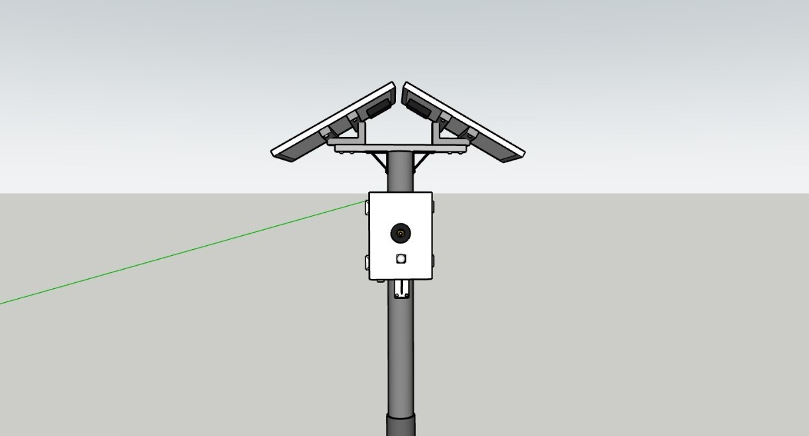
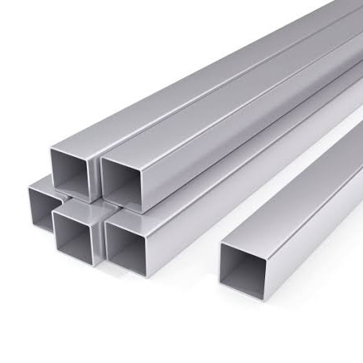

Alat TROSS

Komponen Elektro

SCC 10A PWM Solar Charge LCD LED Display 12V/24V
Pencahayaan Inframerah
Adafruit OV2640 Camera Breakout - 72 Degree
Pengambilan Dokumentasi
Panel Surya Monocrystalline 20 Watt x2 (12V)
Sumber Daya Mandiri
Sensor PIR HC-SR501
Deteksi Gerakan
RTC (Real Time Clock) DS3231
Pewaktu Real-Time
Modem 4G LTE A7670C
Transmisi Data NetworkKomponen Mekanik

Junction Box
Pelindung Rangkaian
Besi Hollow
Rangka Struktur Utama
Pipa Galvanis
Tiang / Penopang Tahan Karat
Klem Pipa Besi
Pengunci & Penjepit Pipa